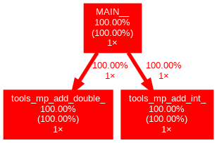

<!DOCTYPE HTML>
<html>
<head>
  <meta charset="utf-8">
  
  <title>使用gprof2dot+dot制作Fortran程序的调用图 | Shigaro</title>
  <meta name="author" content="minyez">
  
  <meta name="description" content="minyez&#39;s blog on life, science and programming">
  
  
  <meta name="viewport" content="width=device-width, initial-scale=1, maximum-scale=1">

  <meta property="og:title" content="使用gprof2dot+dot制作Fortran程序的调用图"/>
  <meta property="og:site_name" content="Shigaro"/>

  
    <meta property="og:image" content=""/>
  

  
  
    <link href="/assets/images/favicon/icon.png" rel="icon">
  
  
  <link rel="stylesheet" href="/css/bootstrap.min.css" media="screen" type="text/css">
  <link rel="stylesheet" href="/css/bootstrap.css" media="screen" type="text/css">
  <link rel="stylesheet" href="/css/font-awesome.css" media="screen" type="text/css">
  <link rel="stylesheet" href="/css/style.css" media="screen" type="text/css">
  <link rel="stylesheet" href="/css/responsive.css" media="screen" type="text/css">
  <link rel="stylesheet" href="/css/highlight.css" media="screen" type="text/css">
  <link rel="stylesheet" href="/css/google-fonts.css" media="screen" type="text/css">
  <!--[if lt IE 9]><script src="//html5shiv.googlecode.com/svn/trunk/html5.js"></script><![endif]-->

  <script src="/js/jquery-2.0.3.min.js"></script>

  <!-- analytics -->
  
<script>
  (function(i,s,o,g,r,a,m){i['GoogleAnalyticsObject']=r;i[r]=i[r]||function(){
  (i[r].q=i[r].q||[]).push(arguments)},i[r].l=1*new Date();a=s.createElement(o),
  m=s.getElementsByTagName(o)[0];a.async=1;a.src=g;m.parentNode.insertBefore(a,m)
  })(window,document,'script','//www.google-analytics.com/analytics.js','ga');
  ga('create', 'UA-111612868-1', 'auto');
  ga('send', 'pageview');
</script>


<script async src="//busuanzi.ibruce.info/busuanzi/2.3/busuanzi.pure.mini.js">
</script>


</head>

 <body 
>
  <nav id="main-nav" class="navbar navbar-default navbar-fixed-top" role="navigation">
  <div class="container">
    <button type="button" class="navbar-header navbar-toggle" data-toggle="collapse" data-target=".navbar-collapse">
      <span class="sr-only">Toggle navigation</span>
      <span class="icon-bar"></span>
      <span class="icon-bar"></span>
      <span class="icon-bar"></span>
    </button>
    <a class="navbar-brand" href="/"></a>
    <div class="collapse navbar-collapse nav-menu">
      <ul class="nav navbar-nav">
        

        <!-- Categories -->
        
        <li>
          <a href="/" title="Shigaro's Home"
            style="font-weight: normal; font-family: Calibri,Arial; font-size: 18px">
            <i class="fa fa-bank"></i>Home
          </a>
        </li>
        
        

        <!-- Categories -->
        
        <!-- Archives -->
        <li>
          <a href="/archives" title="All the articles."
            style="font-weight: normal; font-family: Calibri,Arial; font-size:     18px">
            <i class="fa fa-archive"></i>Archives
          </a>
        </li>
        
        

        <!-- Categories -->
        
        <!-- Tags -->
        <li>
          <a href="/tags" title="All the tags."
            style="font-weight: normal; font-family: Calibri,Arial; font-size:     18px">
            <i class="fa fa-tags"></i>Tags
          </a>
        </li>
        
        

        <!-- Categories -->
        
        <li class="dropdown">
          <a href="/categories" class="dropdown-toggle" data-toggle="dropdown" title="All the categories."
            style="font-weight: normal; font-family: Calibri,Arial; font-size:     18px">
            <i class="fa fa-folder"></i>Categories
            <b class="caret"></b>
          </a>
          <ul class="dropdown-menu">
            <li class="divider"></li>
            <li><a href="/categories" style="font-size: 20px; font-family: 'Calibri Light',Arial">All
                Categories</a><span></span></li>
            <li class="divider"></li>
            
            <li><a href="/categories/Software/"
                style="font-size: 15px; font-family: 微软雅黑">Software<span></span></a></li>
            
            <li><a href="/categories/Programming/"
                style="font-size: 15px; font-family: 微软雅黑">Programming<span></span></a></li>
            
            <li><a href="/categories/Comment/"
                style="font-size: 15px; font-family: 微软雅黑">Comment<span></span></a></li>
            
            <li><a href="/categories/Algorithm/"
                style="font-size: 15px; font-family: 微软雅黑">Algorithm<span></span></a></li>
            
            <li class="divider"></li>
          </ul>
        </li>
        
        

        <!-- Categories -->
        
        <li>
          <a href="/about" title="About me."
            style="font-weight: normal; font-family: Calibri,Arial; font-size: 18px">
            <i class="fa fa-user"></i>About
          </a>
        </li>
        
        
      </ul>
    </div>
  </div> <!-- container -->
</nav>
<div class="clearfix"></div>
  <div class="container">
  	<div class="content">
    	 


	
		<div class="page-header">		
			<h1> 使用gprof2dot+dot制作Fortran程序的调用图</h1>
		</div>		
	


<div class="row post">
	<!-- cols -->
	
	<div id="top_meta"></div>
	<div class="col-md-9">
	

	<!-- content -->
	<div class="mypage">		
	  		

	  <link rel="stylesheet" type="text/css" href="/css/hint.min.css"><div class="alert alert-success"><i class="fa fa-lightbulb-o  float-left"></i>  <p>简要介绍如何基于gprof或Valgrind的性能分析数据, 使用gprof2dot和Graphviz制作Fortran程序的调用图, 以便对Fortran程序进行调试和优化.</p>
</div>
<a id="more"></a>
<h2 id="背景"><a href="#背景" class="headerlink" title="背景"></a>背景</h2><p>程序逻辑或者工作流是程序设计中很重要的部分, 与程序的算法实现及效率紧密相关. 通过分析程序运行中函数的调用顺序和次数等, 可以发现程序中可能存在的设计缺陷和性能瓶颈. 调用图(<a href="https://en.wikipedia.org/wiki/Call_graph" target="_blank" rel="noopener">call graph</a>)是一种展示程序工作流的手段, 包括静态和运行时两种, 前者侧重调用逻辑, 后者侧重实际工作环境中的时间效率.</p>
<p>之前写代码时一直不是很重视设计这个阶段, 最多用心灵导图稍微画一画需求, 也不是非常严格. 这导致过一段时间回看代码, 会对某些地方为什么要那么写产生疑问, 要想很久才能回忆起来, 很费时间. 这对于个人小型项目问题还好, 对中型或大型项目就会造成很大的困难. 在一顿无望的结果测试后, 最近我重新回到组里GAP3的开发里. 尽管理解工作流程, 但对于GAP3的<em>GW</em>计算如何调用它的各种例程, 仍然没有非常清晰的图象. 于是我希望能用调用图来把程序运行逻辑可视化, 帮助自己理清思路. 网上一顿搜索后, 发现可以用gprof和Valgrind来做性能分析, 用gprof2dot和<code>dot</code>来处理分析数据并作图.</p>
<p>这篇文章就是自学的一些总结. 以下所有操作都是在Linux (Fedora 27)下完成, 用到的主要工具是</p>
<ul>
<li>Fortran编译器与链接器: 这里使用Intel 2018 Update 1的<code>ifort</code></li>
<li><a href="https://sourceware.org/binutils/docs/gprof/" target="_blank" rel="noopener">gprof</a>: 用于分析编译器产生的性能分析文件</li>
<li>Valgrind: 在<a href="/2019/03/23/valgrind-1/" title="Valgrind笔记(一)——Memcheck初探">Valgrind笔记(一)——Memcheck初探</a>一文中提到了使用Valgrind的memcheck工具检测内存使用状况, 实际上它还提供了<code>callgrind</code>工具来进行函数调用的运行时分析.</li>
<li><a href="https://github.com/jrfonseca/gprof2dot" target="_blank" rel="noopener">gprof2dot</a>: 将<code>gprof</code>或<code>callgrind</code>分析获得的信息转化成一个以<a href="https://en.wikipedia.org/wiki/DOT_(graph_description_language" target="_blank" rel="noopener">DOT语言</a>)描述的有向图(directed graph)对象. 可以通过<code>pip</code>安装.</li>
<li><code>dot</code>: 利用Graphviz将DOT有向图对象渲染成图片, 属于Graphviz发行版的一部分.</li>
</ul>
<h2 id="一个接口调用的例子"><a href="#一个接口调用的例子" class="headerlink" title="一个接口调用的例子"></a>一个接口调用的例子</h2><p>先从一个简单的例子出发, 把调用图制作的逻辑弄清楚. 下面是一段简单的做整数与浮点数加法的Fortran代码</p>
<figure class="highlight fortran"><table><tr><td class="code"><pre><span class="line"><span class="comment">! filename: hw.f90</span></span><br><span class="line"><span class="keyword">module</span> tools</span><br><span class="line">    <span class="keyword">interface</span> add</span><br><span class="line">        <span class="keyword">module</span> <span class="keyword">procedure</span> add_int</span><br><span class="line">        <span class="keyword">module</span> <span class="keyword">procedure</span> add_double</span><br><span class="line">    <span class="keyword">end</span> <span class="keyword">interface</span> add</span><br><span class="line"></span><br><span class="line">    <span class="keyword">contains</span></span><br><span class="line"></span><br><span class="line">        <span class="function"><span class="keyword">function</span></span> add_int(i, j)</span><br><span class="line">            <span class="keyword">integer</span>, <span class="keyword">intent</span>(<span class="keyword">in</span>) :: i</span><br><span class="line">            <span class="keyword">integer</span>, <span class="keyword">intent</span>(<span class="keyword">in</span>) :: j</span><br><span class="line">            <span class="keyword">integer</span> :: add_int</span><br><span class="line"></span><br><span class="line">            add_int = i +j</span><br><span class="line">        <span class="keyword">end</span> <span class="function"><span class="keyword">function</span></span> add_int</span><br><span class="line"></span><br><span class="line">        <span class="function"><span class="keyword">function</span></span> add_double(i, j)</span><br><span class="line">            <span class="keyword">real</span>(<span class="number">8</span>), <span class="keyword">intent</span>(<span class="keyword">in</span>) :: i</span><br><span class="line">            <span class="keyword">real</span>(<span class="number">8</span>), <span class="keyword">intent</span>(<span class="keyword">in</span>) :: j</span><br><span class="line">            <span class="keyword">real</span>(<span class="number">8</span>) :: add_double</span><br><span class="line"></span><br><span class="line">            add_double = i +j</span><br><span class="line">        <span class="keyword">end</span> <span class="function"><span class="keyword">function</span></span> add_double</span><br><span class="line"><span class="keyword">end</span> <span class="keyword">module</span></span><br><span class="line"></span><br><span class="line"><span class="function"><span class="keyword">program</span></span> hw</span><br><span class="line"></span><br><span class="line">    <span class="keyword">use</span> tools</span><br><span class="line"></span><br><span class="line">    <span class="keyword">integer</span> :: i</span><br><span class="line">    <span class="keyword">real</span>(<span class="number">8</span>) :: x</span><br><span class="line">    <span class="keyword">character</span>(len=<span class="number">20</span>) :: str = <span class="string">"Hello World!"</span></span><br><span class="line"></span><br><span class="line">    <span class="built_in">write</span>(*, <span class="string">"(A20)"</span>) str</span><br><span class="line">    i = add(<span class="number">1</span>, <span class="number">2</span>)</span><br><span class="line">    x = add(<span class="number">1.1d0</span>, <span class="number">2.1d0</span>)</span><br><span class="line">    <span class="built_in">write</span>(*, <span class="string">"(I2)"</span>) i</span><br><span class="line">    <span class="built_in">write</span>(*, <span class="string">"(F6.3)"</span>) x</span><br><span class="line"></span><br><span class="line">    <span class="keyword">stop</span></span><br><span class="line"></span><br><span class="line"><span class="keyword">end</span> <span class="function"><span class="keyword">program</span></span> hw</span><br></pre></td></tr></table></figure>
<p>在这里, 主程序中调用的<code>add</code>函数实际上是一个接口, 当接受两个整数时重载为<code>add_int</code>, 接受两个双精度浮点数是重载为<code>add_double</code>. 下面分别用gprof和valgrind为后端, 进行性能分析和调用图的制作.</p>
<h3 id="使用gprof"><a href="#使用gprof" class="headerlink" title="使用gprof"></a>使用gprof</h3><p>首先, 要使用<code>gprof</code>, 需要在程序编译时添加<code>-p</code>或<code>-pg</code>选项</p>
<figure class="highlight bash"><table><tr><td class="code"><pre><span class="line">ifort -p -g -c hw.f90 -o hw.o</span><br><span class="line">ifort -o test.out hw.o -p</span><br></pre></td></tr></table></figure>
<p>这里尽量采用先编译到目标文件, 再链接到可执行文件的方式. 然后运行test.out</p>
<figure class="highlight bash"><table><tr><td class="code"><pre><span class="line">./test.out</span><br></pre></td></tr></table></figure>
<p>产生gmon.out文件. 用<code>gprof</code>读取这一文件并将标准输出重定向</p>
<figure class="highlight bash"><table><tr><td class="code"><pre><span class="line">gprof test.out &gt; gprof_test.txt</span><br></pre></td></tr></table></figure>
<p>gprof_test.txt中包含了运行<code>test.out</code>过程中各函数的调用次数, 程序在每个函数及其子函数中的停留时间等.</p>
<p>接下来, 使用<code>gprof2dot</code>处理gprof_test.out</p>
<figure class="highlight bash"><table><tr><td class="code"><pre><span class="line">cat gprof_test.out | gprof2dot -f prof -o digraph.dot</span><br></pre></td></tr></table></figure>
<p>digraph.out用一个<code>digraph</code>数据类型描述了一个有向图. 用<code>dot</code>处理该文件并产生</p>
<figure class="highlight bash"><table><tr><td class="code"><pre><span class="line">cat digraph.dot | dot -Tpng -o hw_gprof.png</span><br></pre></td></tr></table></figure>
<p>得到下图. 可以看到<code>MAIN</code>中各调用了一次<code>add_int</code>和<code>add_double</code>. 每个方块中第一个百分数是在该函数及其子函数的运行时间占程序总时间的比例, 第二个数是仅在该函数内的时间的比例. 这里全都是100%, 是因为计算时间太短了, gprof_test.out里的时间都是0.00.</p>
<p><figure class="null"><figcaption>单次加法调用时, gprof产生的hw.f90调用图</figcaption></figure></p>
<p>试着将加法次数增大到九千万次, 就可以看到明显的不同. 双精度耗时比整型的还是要多一些.</p>
<p><figure class="null"><figcaption>加法各九千万次时的gprof调用图</figcaption></figure></p>
<h3 id="使用callgrind"><a href="#使用callgrind" class="headerlink" title="使用callgrind"></a>使用callgrind</h3><p>若用Valgrind来做生成性能分析, 只需使用<code>valgrind</code>调用欲测试函数, 同时指明callgrind工具, 而不需要对编译做特别的改动</p>
<figure class="highlight bash"><table><tr><td class="code"><pre><span class="line">valgrind --tool=callgrind ./test.out</span><br></pre></td></tr></table></figure>
<p>运行结束后会产生名为callgrind.out.xxx的文件, 其中xxx是运行程序进程的PID. 使用gprof2dot分析之</p>
<figure class="highlight bash"><table><tr><td class="code"><pre><span class="line">cat callgrind.out.xxx | gprof2dot -f callgrind -o digraph.dot</span><br></pre></td></tr></table></figure>
<p>生成png的命令与前面gprof的相同. 当只调用一次加法时调用图如下, 出现很多复杂的库函数调用, 猜测应该跟valgrind本身有关, 反而看不到<code>add_int</code>和<code>add_double</code>. 这时并不表示这两个函数未被调用, 而是因为占用时间太少, 被gprof2dot剪裁掉了.</p>
<p><figure class="null"><figcaption>单次加法调用时, callgrind产生的hw.f90调用图</figcaption></figure></p>
<p>提高到九千万次调用后的分析结果看上去正常一些. 同样的, 这也不是说那些库函数未被调用, 而是在这种情况下主要耗时都在加法上, 库函数调用耗时少而被gprof2dot去掉了. 这些都是视觉表现上的考虑.</p>
<p><figure class="null"><figcaption>加法各九千万次时的callgrind调用图</figcaption></figure></p>
<p>比较两种工具所得的调用图, 发现Valgrind能给出包含被调用函数所在库的名称. 在九千万次加法的例子里, 使用Valgrind做性能分析所花的时间比gprof要多得多, 因此还是决定用gprof来做GAP3的分析. 上面用的所有程序和Makefile打包在<a href="fortran-profile.tar.gz">这里</a>了.</p>
<h2 id="GAP3的调用图"><a href="#GAP3的调用图" class="headerlink" title="GAP3的调用图"></a>GAP3的调用图</h2><p>在<code>-O3</code>下编译串行程序, 用<code>gprof</code>做运行时分析, 在真空层为9 Bohr的单层六方BN中测试. 库仑截断的开关打开, 以检查工作流是否跟自己预想的相同. 最后得到调用图如下所示.</p>
<p><figure class="null"><figcaption>O3下GAP3中GW功能的调用图</figcaption></figure></p>
<p>可以得到的比较直接的结论是</p>
<ol>
<li>花费时间最多的上层例程是: 介电矩阵计算<code>calceps</code>(63.70%), 交换自能即Fock算符<code>calcselfx</code>(26.05%), 关联自能<code>calcselfc</code>(2.63%)</li>
<li>花费时间最多的底层例程是<code>calcminm</code>(90.28%), 用于计算KS波函数积与MPB的重叠矩阵元$M^i_{nm}({\bf k, q})$. 原则上计算量是$\mathcal{O}(N_{\chi} N N_e N_v N^2_k)$, 其中$N_{\chi}$是MPB数量, $N$是APW+LO基组数, 价态数量$N_v$, 电子总数$N_e$, BZ中k布点数$N_k$</li>
</ol>
<p>另外发现的一个问题是, 在开启库仑截断后, 所有的库仑势计算都应该用<code>coul_barc_cutoff</code>例程, 但依然有9次<code>coul_barc</code>调用, 因此库仑势计算比关联自能更多一点. <code>coul_setvm0</code>和<code>calcmwm</code>也需要用带cutoff后缀的. 因此这样的调用图也能帮助解决一些流程控制上的bug.</p>
<h2 id="总结"><a href="#总结" class="headerlink" title="总结"></a>总结</h2><p>在这篇文章中, 笔者分别用gprof和callgrind对一个简单的Fortran程序制作了调用图, 并通过调用图分析了GAP3程序中的性能瓶颈, 发现了库仑截断开启时的流程控制问题.</p>
<h2 id="参考"><a href="#参考" class="headerlink" title="参考"></a>参考</h2><p><a href="https://www.cnblogs.com/zengkefu/p/5642991.html" target="_blank" rel="noopener">valgrind的callgrind工具进行多线程性能分析</a></p>
	  
	</div>

    
	<div>
  	<center>
	<div class="pagination">
<ul class="pagination">
	 
				
    	<li class="prev"><a href="/2019/05/24/outwin-read/" class="alignleft prev"><i class="fa fa-arrow-circle-o-left"></i>Prev</a></li>
  		

        <li><a href="/archives"><i class="fa fa-archive"></i>Archive</a></li>

		
		   <li class="next"><a href="/2019/05/08/restart-hexo-blog/" class="alignright next">Next<i class="fa fa-arrow-circle-o-right"></i></a></li>         
        
	
</ul>
</div>

    </center>
	</div>
    
	
    <!-- bdshare -->
    
        

        

    

	<!-- comment -->
    
<section id="comment">
  <h2 class="title">Comments</h2>

  
<div id="disqus_thread"></div>
<script>
/**
*  RECOMMENDED CONFIGURATION VARIABLES: EDIT AND UNCOMMENT THE SECTION BELOW TO INSERT DYNAMIC VALUES FROM YOUR PLATFORM OR CMS.
*  LEARN WHY DEFINING THESE VARIABLES IS IMPORTANT: https://disqus.com/admin/universalcode/#configuration-variables*/
/*
var disqus_config = function () {
this.page.url = PAGE_URL;  // Replace PAGE_URL with your page's canonical URL variable
this.page.identifier = PAGE_IDENTIFIER; // Replace PAGE_IDENTIFIER with your page's unique identifier variable
};
*/
(function() { // DON'T EDIT BELOW THIS LINE
var d = document, s = d.createElement('script');
s.src = 'https://shigaro.disqus.com/embed.js';
s.setAttribute('data-timestamp', +new Date());
(d.head || d.body).appendChild(s);
})();
</script>
<noscript>Please enable JavaScript to view the <a href="https://disqus.com/?ref_noscript">comments powered by Disqus.</a></noscript>
  
</section>


	</div> <!-- col-md-9/col-md-12 -->
		
	
	<div id="side_meta">
		<div class="col-md-3" id="post_meta"> 

	<!-- date -->
	
	<div class="meta-widget">
	<i class="fa fa-clock-o"></i>
	2019-05-15 created
	</div>
	
		
    
	

	<!-- page view by busuanzi -->
	
	<div class="meta-widget">
	<span id="busuanzi_container_page_pv">
	<i class="fa fa-eye"></i>
	<span id="busuanzi_value_page_pv"></span> views
	</span>
	</div>
	

	<!-- post word count -->
	
	<div class="meta-widget">
	<i class="fa fa-tachometer"></i>
	<span class="post-count">1.9k</span> words
	</div>
	

	<!-- categories -->
    
	<div class="meta-widget">
	<a data-toggle="collapse" data-target="#categorys"><i class="fa fa-folder"></i></a>	
    <ul id="categorys" class="tag_box list-unstyled collapse in">
          
  <li>
    <li><a href="/categories/Programming/">Programming<span class="badge">8</span></a></li>
  </li>

    </ul>
	</div>
	

	<!-- tags -->
	
	<div class="meta-widget">
	<a data-toggle="collapse" data-target="#tags"><i class="fa fa-tags"></i></a>		  
    <ul id="tags" class="tag_box list-unstyled collapse in">	  
	    
  <li><a href="/tags/Fortran/">Fortran<span class="badge">3</span></a></li> <li><a href="/tags/Valgrind/">Valgrind<span class="badge">3</span></a></li> <li><a href="/tags/gprof/">gprof<span class="badge">1</span></a></li> <li><a href="/tags/Call-graph/">Call graph<span class="badge">1</span></a></li>

    </ul>
	</div>
		

	<!-- toc -->
	<div class="meta-widget">
	
	   <a data-toggle="collapse" data-target="#toc"><i class="fa fa-bars"></i></a>
	   <div id="toc" class="toc collapse in">
			<ol class="toc-article"><li class="toc-article-item toc-article-level-2"><a class="toc-article-link" href="#背景"><span class="toc-article-text">背景</span></a></li><li class="toc-article-item toc-article-level-2"><a class="toc-article-link" href="#一个接口调用的例子"><span class="toc-article-text">一个接口调用的例子</span></a><ol class="toc-article-child"><li class="toc-article-item toc-article-level-3"><a class="toc-article-link" href="#使用gprof"><span class="toc-article-text">使用gprof</span></a></li><li class="toc-article-item toc-article-level-3"><a class="toc-article-link" href="#使用callgrind"><span class="toc-article-text">使用callgrind</span></a></li></ol></li><li class="toc-article-item toc-article-level-2"><a class="toc-article-link" href="#GAP3的调用图"><span class="toc-article-text">GAP3的调用图</span></a></li><li class="toc-article-item toc-article-level-2"><a class="toc-article-link" href="#总结"><span class="toc-article-text">总结</span></a></li><li class="toc-article-item toc-article-level-2"><a class="toc-article-link" href="#参考"><span class="toc-article-text">参考</span></a></li></ol>
		</div>
	
	</div>
	
    <hr>
	
</div><!-- col-md-3 -->

	</div>
		

</div><!-- row -->

<script type="text/javascript">
var disqus_shortname = 'shigaro';
(function(){
  var dsq = document.createElement('script');
  dsq.type = 'text/javascript';
  dsq.async = true;
  dsq.src = '//' + disqus_shortname + '.disqus.com/embed.js';
  (document.getElementsByTagName('head')[0] || document.getElementsByTagName('body')[0]).appendChild(dsq);
}());
</script>


	</div>
  </div>
  <div class="container-narrow">
  <footer> <p>
  
  &copy; 2020 by <a href="http://shigaro.org"> minyez </a>
  
    | <a href="http://github.com/minyez/hexo-theme-freemind/">Theme</a> based on two Freemind themes by <a href="https://github.com/wzpan/hexo-theme-freemind/">wzpan</a> and <a href="https://github.com/PytLab/hexo-theme-freemind/">PytLab</a> 
    | Powered by <a href="https://github.com/hexojs/hexo">Hexo</a>
  
    <span id="busuanzi_container_site_uv">| <span id="busuanzi_value_site_uv"></span> visitors</span>
  
  
	| <span class="post-count">53.6k</span> words
  
</p>
 </footer>
</div> <!-- container-narrow -->
  


  
<a id="gotop" href="#">   
  <span>▲</span> 
</a>

<script src="/js/jquery.imagesloaded.min.js"></script>
<script src="/js/gallery.js"></script>
<script src="/js/bootstrap.min.js"></script>
<script src="/js/main.js"></script>
<script src="/js/search.js"></script> 


<link rel="stylesheet" href="/fancybox/jquery.fancybox.css" media="screen" type="text/css">
<script src="/fancybox/jquery.fancybox.pack.js"></script>
<script type="text/javascript">
(function($){
  $('.fancybox').fancybox();
})(jQuery);
</script>


   <script type="text/javascript">      
     var search_path = "search.xml";
	 if (search_path.length == 0) {
	 	search_path = "search.xml";
	 }
	 var path = "/" + search_path;
     searchFunc(path, 'local-search-input', 'local-search-result');
   </script>


<!-- Global site tag (gtag.js) - Google Analytics -->
<!--    added 2018-07-12 -->
<!-- modified 2019-05-10 -->

<script async src="https://www.googletagmanager.com/gtag/js?id=UA-111612868-1"></script>
<script>
  window.dataLayer = window.dataLayer || [];
  function gtag(){dataLayer.push(arguments);}
  gtag('js', new Date());

  gtag('config', 'UA-111612868-1');
</script>


</body>
   </html>
